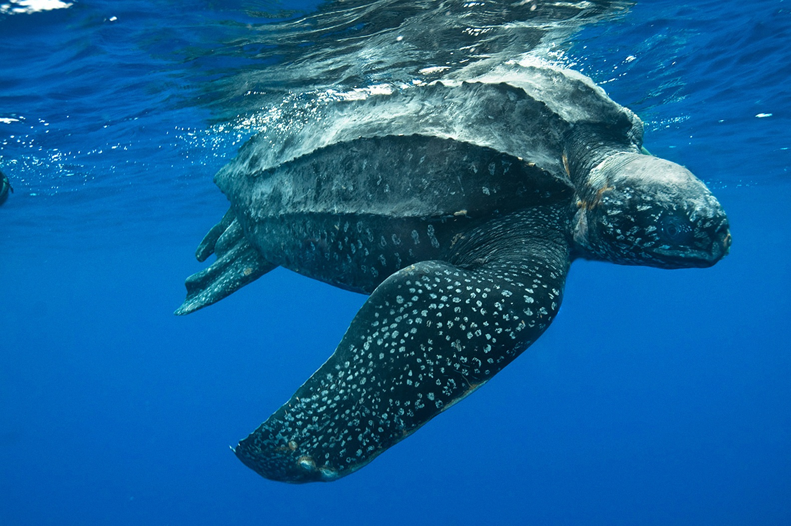

Visit Some of Our National Parks

Sri Lanka is known for its' abundance of wild life. In order to save and preserve our animals and plants we have multiple wildlife sanctuaries and parks. This allows us to provide protection as well as educate the public of the wonders of the wild.We have things ranging from bird parks to national enclosures.
- List of National Parks
- Bundala
- Horton Plains
- Yala
- Minneriya
- Udawalawe
- Wilpattu
- List of Bird Parks
- Kalametiya
- Mannar
- Anawilundawa
- Attidiya
- Kumana
- List of Safari
- Yala
- Udawalawe
- Wasgamuwa
- Sinharaja
- Minneriya